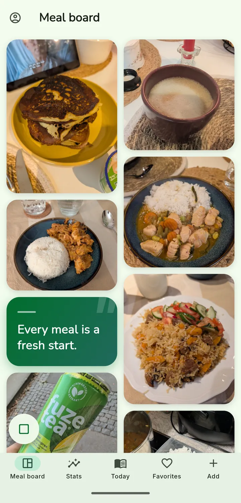
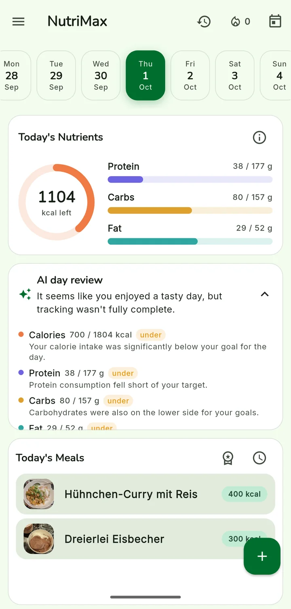
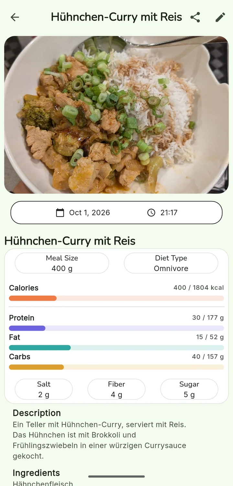
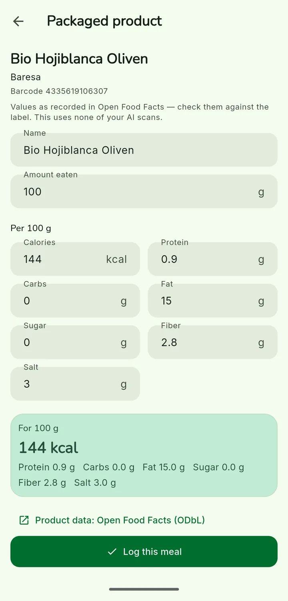

Calorie tracking you'll actually stick with. Take a photo or type what you ate, and NutriMax estimates the calories, protein, carbs and fat for you — no database searching, no weighing.
You had a weight goal. You installed a tracker, and gave up — not because you stopped caring, but because searching a database, scanning and weighing turned every meal into a chore.
NutriMax drives the effort of logging close to zero. A photo or a few words is enough for an estimate, so tracking survives busy days, restaurant meals and home cooking alike.
Around that sits everything that keeps you going: a plan built from your goal, a wall of the meals you've logged, a streak, reminders, and a short review of each finished day.
Tap the plus button on your day, and pick how you want to add the meal.
Take a photo, choose one from your gallery, or simply type what you ate. Details like “cooked in olive oil” sharpen the estimate. English and German both work.
Tap Estimate Nutrition. NutriMax reads your photo and text and fills in calories and macros, along with the ingredients it recognised.
Ate more or less? Slide the portion and the numbers rescale. Want detail? Edit the meal ingredient by ingredient in Pro Mode, free for everyone.




The photo gets a meal logged. Everything else is there so you're still logging next month.
The plan wizard works out your calorie and macro goals from your body, activity level and target weight.
A wall of your meal photos, mixed with motivational phrases and good-news facts counted from your own log — your streak, this week's protein, your most consistent weekday.
Count the days in a row you've logged, mark complete days for a medal, and get meal reminders that skip any meal you've already logged.
A short write-up of a finished day: what you ate, how it landed against your goals, and one thing to try next.
Scan a product to use the values on its label, from the community database Open Food Facts. Scans don't use up your AI estimates.
Send a picture card of a meal to anyone, or a link another NutriMax user can import into their own log. Links expire after 7 days.
See your intake and your weight over time, and log your weight in two taps from the plus button.
NutriMax asks before it sends anything to the AI, and sends only the photo and text you entered. Delete your account and data from inside the app.
Free to download for Android and iPhone, with optional in-app purchases. Available in Germany and Austria. The app speaks German and English.
Questions or feedback? Write to {{ site.data.company.email }}.
NutriMax gives estimates for everyday nutrition tracking. It is not a medical device and not medical advice. Barcode product data from Open Food Facts, available under the Open Database License.